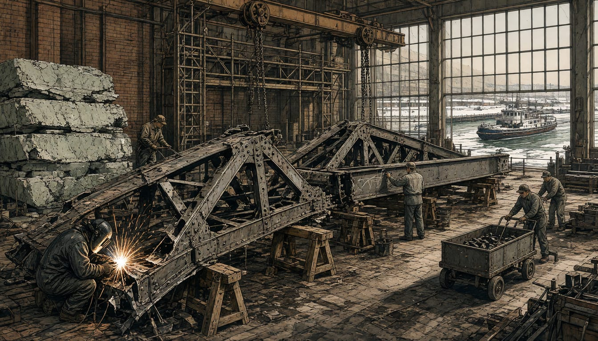

US envoys head to Berlin for Ukraine talks as Europe's seat at the table stays disputed
Witkoff and Kushner are to meet Ukrainian and European officials on security guarantees and postwar recovery, while Moscow denies Europe was ever promised a seat.

US President Donald Trump's envoys Steve Witkoff and Jared Kushner plan to meet Ukrainian and European officials in Berlin this week on security guarantees and a postwar recovery plan for Ukraine, a US official said. The dispute over Europe's seat hangs over the talks: Witkoff and Kushner said Russia agreed to give Europe a seat at the negotiating table, a claim Moscow disputes.
Russia, for its part, is seeking a sweeping deal to rewrite what it calls Europe's security architecture. It has previously demanded curbs on NATO's presence in central and eastern Europe and limits on foreign troops and hardware in Ukraine. Kremlin aide Yuri Ushakov said Russia had not agreed to expand the talks beyond the Russian, Ukrainian and US delegations. He added that no date had been agreed for a next round.
Zelenskyy said representatives of France, Germany, Britain, Italy and Poland took part fully in the online talks and would have the same representation in future meetings with Russian negotiators. Representatives of the EU, France, Germany, Italy, the UK, Ukraine, the US and NATO met in Abu Dhabi on 10 November 2026 to coordinate on ending the war. Poland claims to speak for more than itself. Foreign minister Radek Sikorski said, "Poland will represent our entire region, the entire eastern flank … this means that we are in the game."
Russian ballistic missiles hit the Northern and Southern bridges, two major transport arteries across the Dnipro river in Kyiv. Russia's army confirmed it had hit both in what it called a "massive attack" on Ukraine's infrastructure. Trump, speaking before plans to discuss the war with Putin and Xi Jinping in China, said he believed the Russian president was "backing down a little bit". Zelensky warned that a three-way meeting of Russia, China and the United States could amount to a Yalta-like "redistribution of spheres of influence" for the 21st century.
The European partners, Ukraine and Washington pledged only to keep working closely together through the negotiating process. Their stated objective is to move toward broader multilateral discussions involving the European partners and a comprehensive and lasting peace. Euobserver reports that Europe still does not know the practical format of those talks.